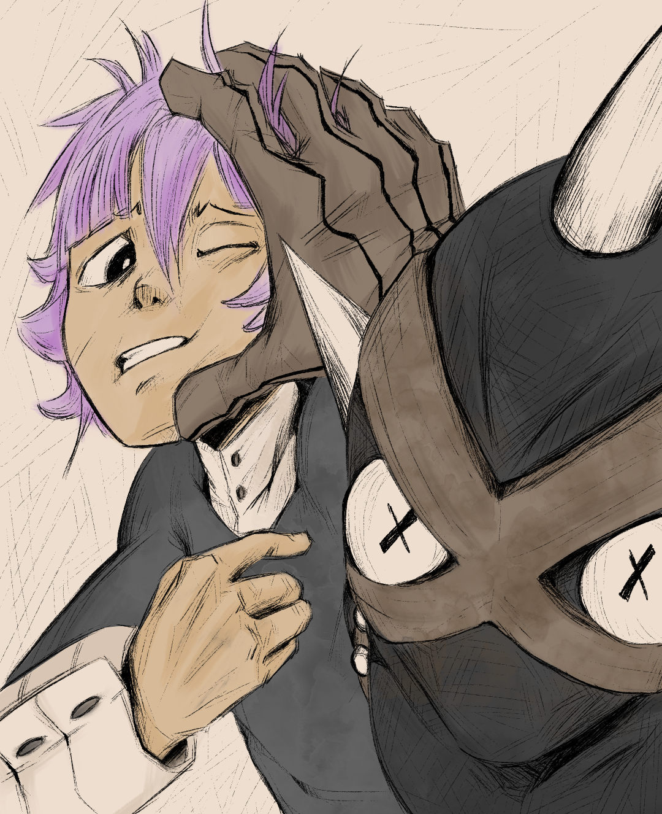
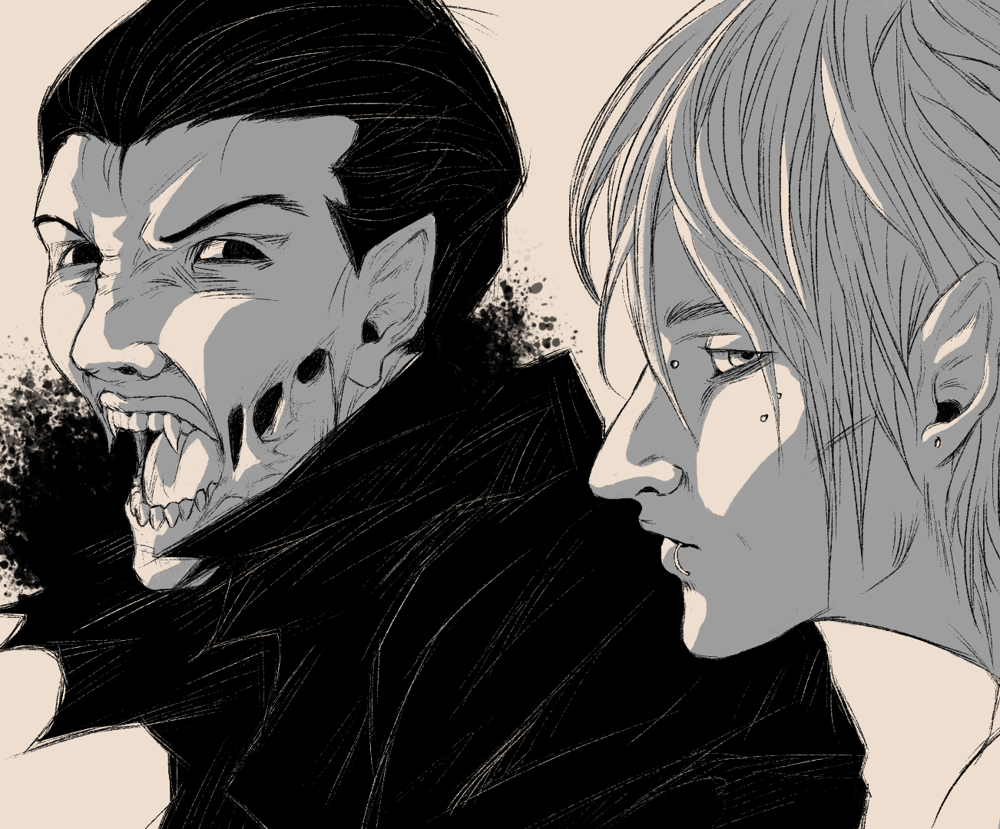
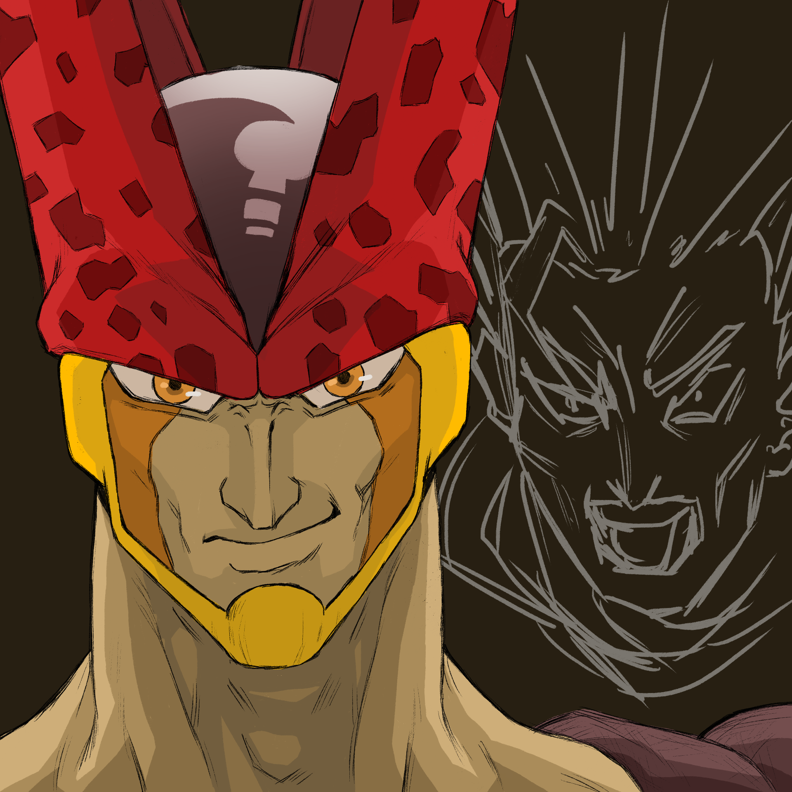

I have many hobbies I jump back and forth between, but recently I've been really focused on drawing and indie game development. Here I will showcase some things I've made.
Just a small side project I've been working on in my free time. I decided to go back and play around on Scratch and make a small game just for nostalgia sake. I used Scratch back when I was a little kid and it kickstarted my interest in programming.
I enjoy drawing in my free time ever since I was a child. I think I specialize most in drawing characters and creatures but generally I like to draw anything that comes to mind. Here are some of my recent artwork pieces.


